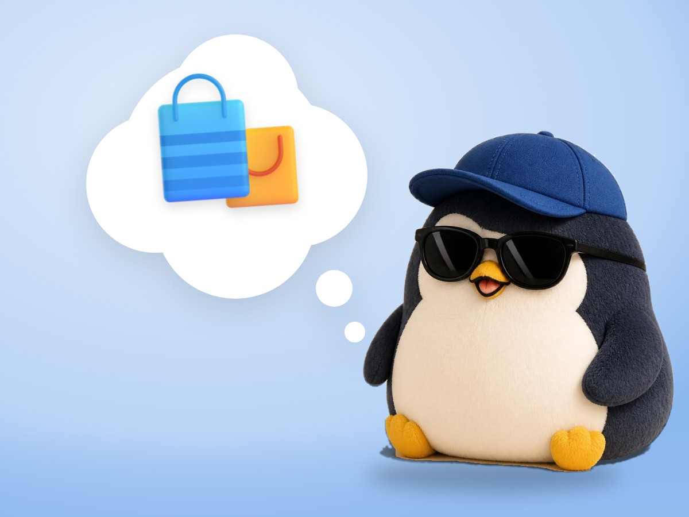

📝 DRAFT · 下書き — まだ本番に出していません · 下書き一覧
🐧 EVERYDAY LIFE⚡ 16 SEC
Wanting something just because it is popular is not a real want 🏷️

Big Hit Signs
When a sign says "Big hit!" or "Selling fast!", somehow you want it.
Borrowed Want
But that may be a borrowed want, not your real want.
⚡ TRY IT
Peel off the stickers
Tap each sticker. Do you still want it?
Rainbow drink
💗 Want
"I don't even like sweet drinks."
💨 Borrowed💛 Real
Sneakers
💗 Want
"I have 3 pairs already."
💨 Borrowed💛 Real
A book
💗 Want
"I have wanted to read this for 1 year!"
💨 Borrowed💛 Real
A plush toy
💗 Want
"Cute, but… where do I put it?"
💨 Borrowed💛 Real
🏷️ Stickers left4
📚 Only the book still shines. That is your real want.
Real Want
A real want still fills your heart after you get it.
The Sticker Test
If you still want it without the "No. 1" sticker, it is probably real.
📚 I learned this from the Japanese blog "Panda no Ondo".